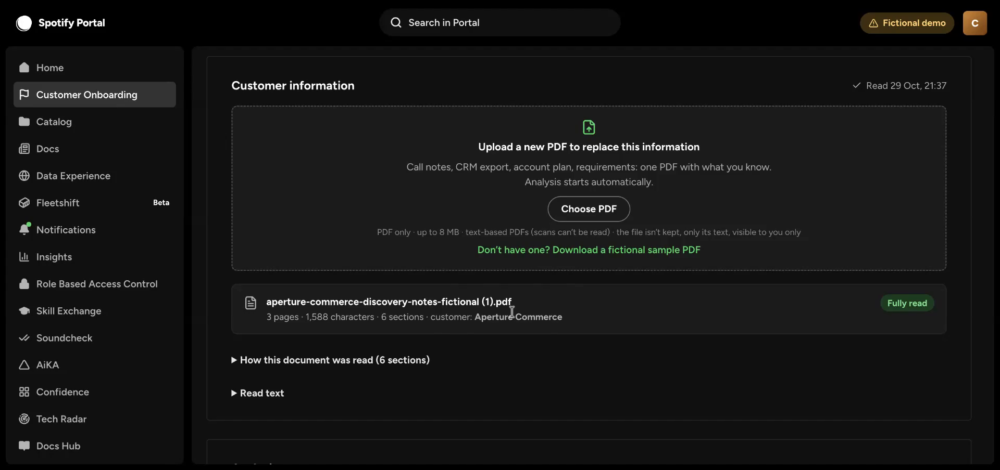
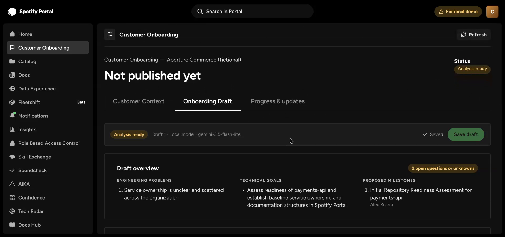
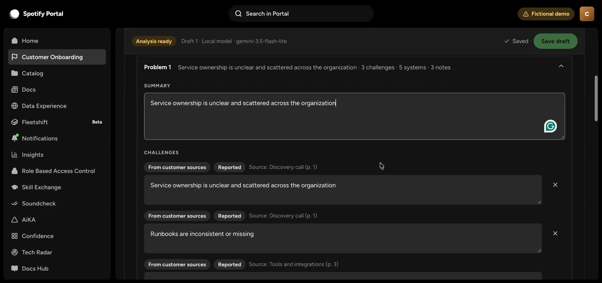
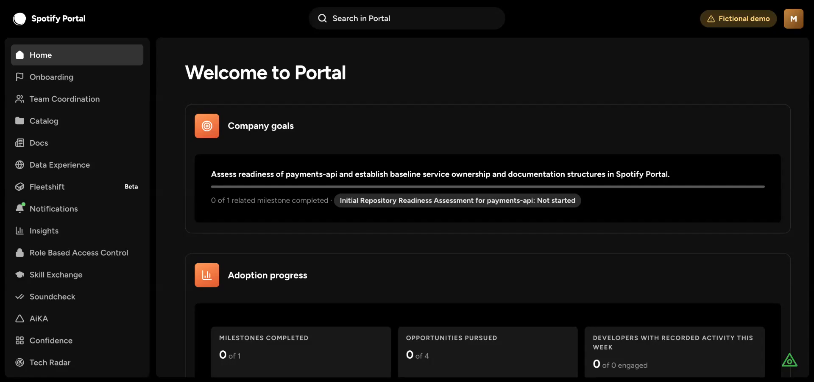
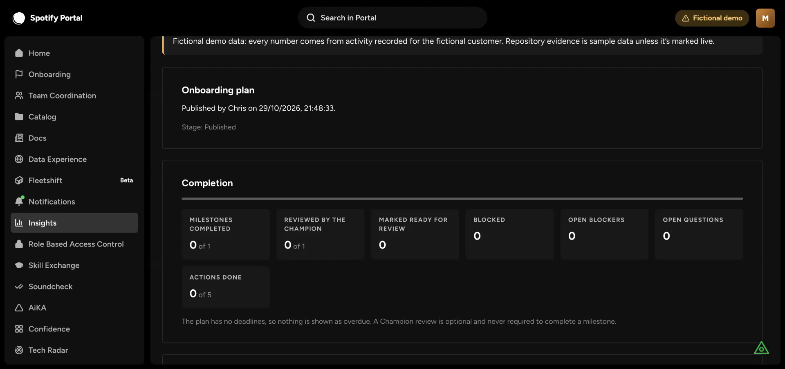
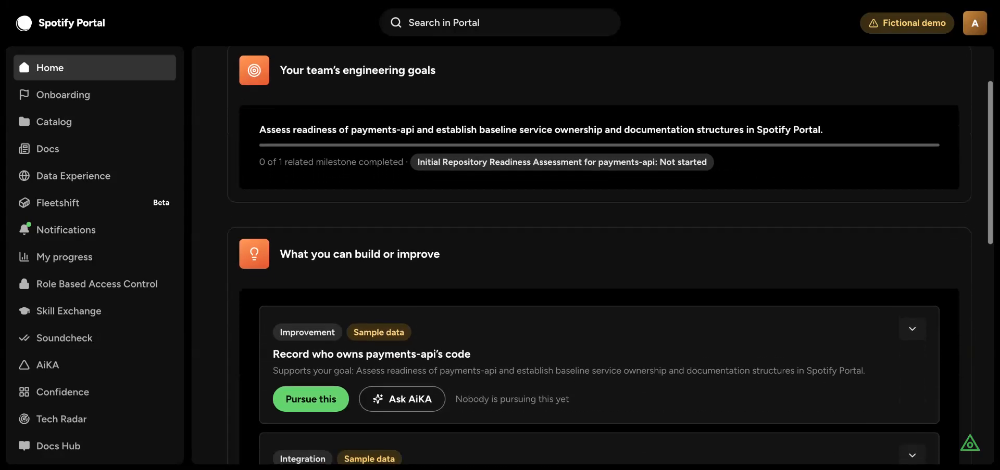
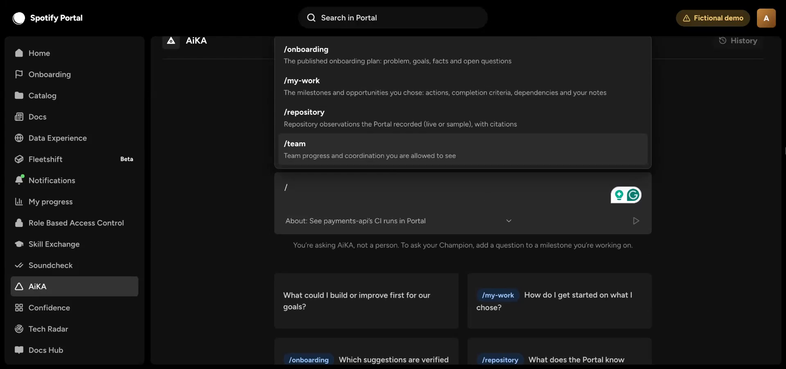
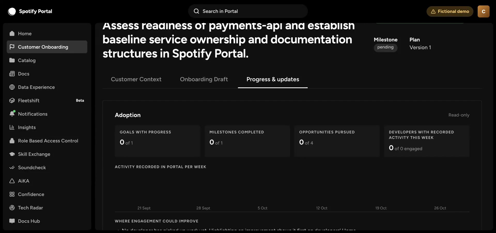

Start with what Chris already knows.
Bring existing customer notes into the onboarding workflow instead of reconstructing discovery across a new set of fields.
For Chris: Less repeated preparation before a customer can get started.
More momentum, less friction to build? More alignment, fewer status meetings? More proactive support, less firefighting?
01 / MEET DREAM DAY
Chris already knows why a customer bought Spotify Portal. Turning those conversations into onboarding plans, helping teams get started, and finding out where they’re stuck takes more work.
Dream Day turns his existing customer notes into a personalized onboarding plan he can review and share. Developers get relevant steps to follow, while progress and blockers stay connected to the customer’s goal—giving Chris the context to follow up where he can help.
Less time rebuilding context. More time helping customers reach value.
Try the prototype—from customer briefing to developer progress.
02 / THE PRODUCT IN ACTION
Follow one customer from Chris’s first plan to the progress he can follow up on.
Note Frames from a recorded prototype demo with a fictional customer, Aperture Commerce. Progress counts in the recording are zero. AiKA appears as the intended integration represented in the prototype.
CUSTOMER GOAL / Make service ownership clear








Bring existing customer notes into the onboarding workflow instead of reconstructing discovery across a new set of fields.
For Chris: Less repeated preparation before a customer can get started.
The draft connects engineering problems to technical goals and a proposed first milestone, giving Chris something concrete to assess.
For Chris: Less work translating customer conversations into an onboarding plan.
Chris can edit the draft and save changes before publishing. He can correct the interpretation while the relevant source context remains visible.
For Chris: A faster starting point that Chris can tailor before sharing.
The customer-facing experience carries the published goal and first milestone into Portal, giving the champion a common starting point for the team.
For Chris: Chris’s customer understanding survives the handoff.
The team view brings milestone completion, blockers and open questions together. In this recording these counts are still zero.
For Chris: The champion has a place to check team status before asking Chris to reconstruct it.
The developer sees the team’s engineering goal alongside a specific opportunity: record who owns payments-api’s code. The suggested work is connected to the customer objective.
For Chris: A clearer starting point reduces the need for Chris to explain every next step.
The AiKA-style prototype surface exposes context choices for onboarding, selected work, repository observations and team progress. This demonstrates the intended handoff to contextual assistance.
For Chris: A path toward resolving routine questions without making Chris the first stop.
The customer progress view brings the goal, milestone and recorded activity together. This demo shows no recorded adoption yet; it illustrates the information Chris can monitor as work is reported.
For Chris: A shared view of customer progress can help Chris decide what to ask and where to support.
Less time rebuilding context. More time helping customers move forward.